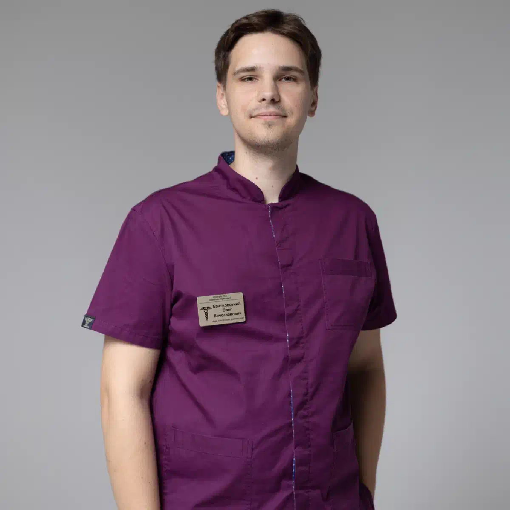
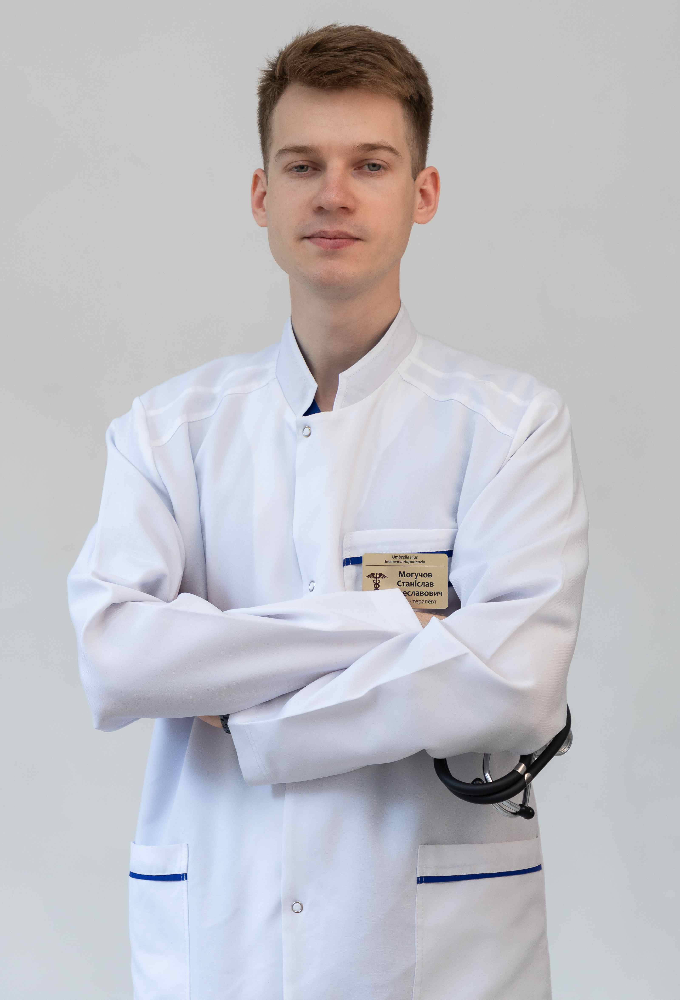

+38(068) 79 72 782
+38(068) 79 72 782Лікування наркоманії в Черкасах
Крок до нового життя без залежності


Безкоштовна консультація, працюємо цілодобово 24/7
Крок до нового життя без залежності

Дата написання: Оновлюється...
Останнє оновлення: Оновлюється...
Наркотична залежність — це тяжке хронічне захворювання, яке руйнує фізичне та психічне здоров’я людини, впливає на поведінку, стосунки, роботу й соціальне життя. Лікування наркоманії в Черкасах потребує комплексного підходу: детоксикації, медикаментозної підтримки, психотерапії та реабілітації.
Залежність формується поступово. Спочатку вживання може здаватися епізодичним, але з часом розвивається психологічна та фізична тяга. Наркотики порушують роботу центральної нервової системи, виснажують організм, погіршують пам’ять, концентрацію, сон і емоційний стан. Страждають серце, печінка, нирки, головний мозок, підвищується ризик психозів, панічних атак і передозування.
Наркоманія — це не слабкість характеру, а захворювання, яке потребує професійної допомоги. Самостійні спроби відмовитися часто закінчуються зривом через ломку та сильну психологічну тягу. Сучасне лікування допомагає не лише очистити організм, а й опрацювати причини залежності, змінити поведінку та знизити ризик повторного вживання.
Залежність формується під впливом кількох факторів: стресу, тривожності, депресії, впливу оточення, доступності наркотиків, генетичної схильності, хронічної втоми та бажання втекти від проблем.
Важливу роль відіграють особливості особистості: низька стресостійкість, імпульсивність, труднощі у спілкуванні та соціальній адаптації. У підлітків і молодих людей часто впливає компанія та бажання “бути як усі”. На фізіологічному рівні наркотики впливають на систему винагороди мозку, викликаючи викид дофаміну. З часом природні джерела радості перестають приносити задоволення, розвивається толерантність, потрібна більша доза, а контроль над уживанням поступово втрачається.
Чим довше людина вживає наркотики, тим сильніше страждають організм, психіка та соціальне життя. Раннє звернення по допомогу дозволяє знизити ризик передозування, запобігти тяжким ускладненням, швидше відновити нервову систему та підвищити шанси на стійке одужання.
На ранніх етапах залежність ще не встигає глибоко закріпитися, тому лікування зазвичай проходить легше. При тривалому вживанні розвиваються порушення роботи серця, печінки, нирок, головного мозку, погіршуються пам’ять, увага та емоційний стан. Запущені форми залежності потребують тривалішої терапії, що включає детоксикацію, медикаментозне лікування, психотерапію та реабілітацію. Тому важливо не чекати критичного стану, а звертатися до спеціалістів якомога раніше.
Розпізнати залежність можна за змінами поведінки та самопочуття. Часто з’являються різкі перепади настрою, порушення сну й апетиту, погіршення зовнішнього вигляду, прихованість, агресія, ізоляція, втрата інтересу до роботи, навчання та близьких.
Людина може змінювати коло спілкування, уникати розмов, брехати, шукати гроші на речовини й заперечувати наявність проблеми. Поступово наркотик стає головним пріоритетом, а контроль над поведінкою знижується. Фізичні симптоми можуть включати слабкість, тремор, пітливість, тахікардію, порушення координації, зміну зіниць, різке схуднення або набряклість. При ломці з’являються болі в тілі, тривога, безсоння, дратівливість і сильне бажання знову вжити речовину.
Лікування наркоманії включає кілька етапів: детоксикацію організму, медикаментозну терапію, психотерапію, реабілітацію та соціальну адаптацію. Кожен етап важливий для стійкого результату.
Детоксикація допомагає очистити організм від наркотичних речовин і зняти гострі симптоми ломки. Медикаментозна підтримка стабілізує роботу внутрішніх органів, нервової системи та знижує вираженість тривоги, безсоння й фізичного дискомфорту. Психотерапія допомагає розібратися в причинах залежності, змінити руйнівні моделі поведінки та навчитися справлятися зі стресом без наркотиків. Реабілітація закріплює результат, відновлює соціальні навички та допомагає повернутися до нормального життя.
Детоксикація — це перший етап лікування, спрямований на очищення організму від токсинів і полегшення ломки. Вона допомагає стабілізувати стан пацієнта, знизити інтоксикацію, відновити водно-електролітний баланс і підтримати роботу внутрішніх органів.
Під час процедури можуть застосовуватися крапельниці, вітаміни, електроліти, препарати для підтримки печінки, серця, нервової системи, а також засоби для зменшення болю, тривоги, нудоти та порушень сну за показаннями. Детоксикація полегшує фізичний стан, але не усуває психологічну залежність. Тому після стабілізації важливо продовжити лікування: пройти консультації нарколога, психотерапію та реабілітацію, щоб знизити ризик зриву й закріпити результат.
Вартість лікування наркоманії в Черкасах починається від 2499 грн.
| Популярні послуги | Ціна |
|---|---|
| Консультація нарколога | Від 1500 грн |
| Крапельниця від наркотиків | Від 2499 грн |
| Підшивка від наркотиків | Від 15000 грн |
| Виведення із запою вдома | Від 2199 грн |
Кожен пацієнт має свої особливості, тому лікування залежності підбирається персонально. Лікар враховує фізичний стан, психоемоційний фон, стаж уживання, тип речовини, вираженість ломки, наявність хронічних захворювань, вік, мотивацію до лікування та попередній досвід терапії.
Індивідуальний підхід особливо важливий, тому що універсальної схеми лікування не існує. В одних пацієнтів переважають фізичні симптоми — біль, слабкість, безсоння, тремор, в інших — тривожність, депресія, агресія або емоційна нестабільність. Тому програма допомоги може включати детоксикацію, медикаментозну підтримку, психотерапію та реабілітацію.
У процесі лікування лікар відстежує динаміку стану й за потреби коригує терапію. Особлива увага приділяється мотивації пацієнта та підтримці близьких, оскільки сімейне середовище сильно впливає на ризик зриву. Такий персональний підхід допомагає не лише зняти гострий стан, а й опрацювати причини залежності, відновити психічне здоров’я, знизити ризик рецидиву та повернутися до повноцінного життя.
Кокаїнова залежність супроводжується сильною психологічною тягою. Лікування включає детоксикацію та інтенсивну психотерапію. Особливістю кокаїну є його виражений вплив на центральну нервову систему та систему винагороди мозку. Після короткочасного підйому настрою й приливу енергії настає різкий спад, який супроводжується апатією, дратівливістю та депресивними станами.
При регулярному вживанні розвивається виражена психічна залежність: людина відчуває сильне бажання знову вжити речовину, попри негативні наслідки. З часом погіршується робота серцево-судинної системи, підвищується ризик інфаркту, інсульту та порушень серцевого ритму. Також страждає психіка — можливі тривожні розлади, панічні атаки та кокаїнові психози. Детоксикація при кокаїновій залежності спрямована на виведення токсинів, стабілізацію стану пацієнта та зниження вираженості симптомів відміни. Хоча фізична ломка при кокаїні менш виражена, ніж при опіоїдах, психоемоційні прояви можуть бути дуже тяжкими й потребують медичного контролю.
Амфетаміни викликають виснаження нервової системи. Основний акцент робиться на відновленні психіки та нормалізації сну. При тривалому вживанні амфетамінів відбувається серйозне порушення роботи центральної нервової системи. Нервові клітини зазнають перевантаження, виснажуються запаси нейромедіаторів, що призводить до виражених психоемоційних розладів. Після періоду стимуляції настає так званий «краш» — стан сильної втоми, апатії, дратівливості та депресії. У тяжких випадках можливі психози, галюцинації та параноїдальні стани, які потребують термінової медичної допомоги.
Лікування починається з детоксикації, спрямованої на виведення токсинів і стабілізацію загального стану. Особлива увага приділяється відновленню сну, оскільки хронічне недосипання значно погіршує психічні порушення. Для цього застосовуються медикаментозні препарати під контролем лікаря. Одним з етапів є відновлення роботи нервової системи. Використовуються препарати, які допомагають нормалізувати емоційний стан, знизити тривожність і підтримати когнітивні функції. Психотерапія допомагає пацієнту впоратися з психологічною залежністю, навчитися контролювати імпульси та будувати нову модель поведінки без стимуляторів.
Метадонова залежність потребує тривалої терапії, включаючи поступову відміну препарату та медичний контроль. Метадон належить до опіоїдних речовин і формує виражену фізичну та психологічну залежність. При тривалому вживанні організм адаптується до постійної присутності препарату, тому різка відміна може викликати тяжкий абстинентний синдром.
Симптоми ломки можуть включати сильний біль у тілі, безсоння, тривожність, пітливість, озноб, порушення роботи шлунково-кишкового тракту та виражене загальне виснаження. Саме тому лікування метадонової залежності проводиться поступово.
Зниження дозування здійснюється поетапно під контролем лікаря, що дозволяє мінімізувати дискомфорт і знизити навантаження на організм. Обов’язковим етапом є детоксикація, спрямована на виведення речовини та продуктів її розпаду, а також стабілізація роботи внутрішніх органів. Не менш важлива психологічна допомога. Метадонова залежність часто супроводжується сильним страхом перед ломкою та високою ймовірністю зривів. Психотерапія допомагає подолати ці бар’єри, сформувати мотивацію до одужання та навчитися жити без наркотика.
Залежність від прегабаліну, або Лірики, розвивається швидко. Необхідна медикаментозна корекція та спостереження лікаря. Прегабалін застосовується в медицині для лікування неврологічних розладів, однак при неконтрольованому прийомі він може викликати виражену залежність.
Уже через короткий час формується психологічна та фізична прив’язаність до препарату. Пацієнти можуть збільшувати дозування, прагнучи посилити ефект розслаблення або ейфорії. При регулярному вживанні порушується робота центральної нервової системи. Можуть виникати сонливість або збудження, запаморочення, хиткість ходи, зниження концентрації уваги, погіршення пам’яті, тривожність, дратівливість і депресивні стани.
При відміні препарату розвивається абстинентний синдром, який може супроводжуватися безсонням, тривогою, внутрішнім напруженням, болем у тілі та сильним дискомфортом. Лікування залежності від прегабаліну проводиться поступово. Різка відміна може погіршити стан, тому дозування знижується поетапно під контролем лікаря.
Синтетичні наркотики викликають тяжкі психічні розлади. Лікування включає детоксикацію та психіатричну допомогу. До цієї групи належать так звані «солі», спайси та інші дизайнерські речовини, склад яких часто невідомий і може змінюватися. Це робить їх особливо небезпечними, оскільки неможливо точно передбачити реакцію організму навіть при одноразовому вживанні.
Синтетичні наркотики мають потужний токсичний вплив на центральну нервову систему. Уже після короткого періоду вживання можуть розвиватися гострі психози, галюцинації, марення, виражена тривожність, панічні атаки, агресія, втрата контролю над поведінкою та інші небезпечні психічні реакції.
Такі стани нерідко потребують невідкладної медичної допомоги та можуть становити загрозу для самого пацієнта й оточення. Лікування починається з детоксикації, спрямованої на виведення токсинів і стабілізацію стану. Важливо якомога швидше знизити інтоксикацію, щоб зменшити навантаження на мозок і внутрішні органи. Ключову роль відіграє психіатрична допомога. Лікар підбирає препарати для купірування психозів, зниження тривожності, нормалізації сну та відновлення психічного стану. У тяжких випадках лікування проводиться в умовах стаціонару під цілодобовим наглядом.
ЛСД впливає на психіку та сприйняття. Основна увага приділяється психологічній стабілізації пацієнта. Ця речовина належить до сильних психоделіків і має виражений вплив на роботу головного мозку. Вона змінює сприйняття реальності, викликає зорові та слухові викривлення, порушує відчуття часу й простору.
Навіть одноразове вживання може призвести до непередбачуваних психічних реакцій. На тлі прийому ЛСД у пацієнта можуть спостерігатися галюцинації, ілюзії, тривога, панічні атаки, відчуття страху, втрата контролю, дезорієнтація та параноїдальні думки.
У деяких випадках розвивається так званий «поганий тріп», який супроводжується сильним страхом, агресією та небезпечною поведінкою. Такі стани потребують негайного втручання спеціалістів. Лікування спрямоване насамперед на стабілізацію психоемоційного стану пацієнта. За потреби застосовуються медикаменти для зниження тривожності, нормалізації сну та усунення гострих психічних симптомів.
Налбуфін викликає як фізичну, так і психологічну залежність. Лікування спрямоване на зняття ломки та відновлення організму. Налбуфін належить до опіоїдних анальгетиків і при тривалому або неконтрольованому застосуванні може викликати стійку залежність.
Попри те, що препарат використовується в медичних цілях, його зловживання призводить до формування толерантності — пацієнту потрібні все більші дози для досягнення попереднього ефекту. При припиненні вживання розвивається абстинентний синдром, який може супроводжуватися вираженим болем у тілі, тривожністю, дратівливістю, безсонням, пітливістю, ознобом, порушеннями роботи шлунково-кишкового тракту та сильним внутрішнім напруженням.
Лікування починається з детоксикації, спрямованої на виведення речовини та полегшення симптомів ломки. Пацієнту призначаються препарати для зменшення болю, нормалізації сну, стабілізації емоційного стану та підтримки роботи внутрішніх органів. Важливим етапом є психологічна допомога, яка допомагає знизити тягу до препарату й запобігти зривам.
МДМА виснажує нервову систему. Важливими є відновлення нейромедіаторів і психологічна підтримка. Екстазі має виражений вплив на головний мозок, особливо на системи, що відповідають за вироблення серотоніну, дофаміну та інших нейромедіаторів.
Під час уживання людина може відчувати ейфорію, емоційний підйом і підвищену відкритість до спілкування. Однак після цього настає різке виснаження ресурсів нервової системи. Часто спостерігаються депресивні стани, тривожність, внутрішнє напруження, порушення сну, зниження концентрації та пам’яті, емоційна спустошеність.
При регулярному прийомі МДМА ці стани посилюються, формується психологічна залежність, а відновлення психіки займає дедалі більше часу. Лікування починається з детоксикації, яка допомагає знизити інтоксикацію та стабілізувати загальний стан пацієнта. Далі основна увага приділяється відновленню нервової системи, нормалізації сну та зниженню тривожності.
Героїнова залежність — одна з найтяжчих. Вона потребує комплексного лікування та тривалої реабілітації. Героїн належить до опіоїдних наркотиків і швидко формує як фізичну, так і психологічну залежність. Уже після короткого періоду вживання організм адаптується до речовини, а людина втрачає здатність контролювати прийом.
Абстинентний синдром при героїновій залежності протікає особливо тяжко та може включати інтенсивний біль у м’язах і суглобах, сильну тривожність, дратівливість, безсоння, пітливість, озноб, нудоту, блювання, розлади травлення, слабкість і виснаження.
Без медичної допомоги переносити такі стани дуже складно, що часто призводить до повторного вживання. Лікування починається з детоксикації, яка дозволяє безпечно зняти ломку та стабілізувати стан пацієнта. Далі проводиться медикаментозна терапія, спрямована на зниження тяги до наркотиків і відновлення організму. Ключовим етапом є психотерапія. Вона допомагає пацієнту усвідомити причини залежності, змінити мислення й поведінкові моделі, навчитися справлятися зі стресом без наркотиків. Реабілітація при героїновій залежності може тривати кілька місяців і спрямована на відновлення особистості та профілактику рецидивів.
Мефедрон викликає сильну психічну залежність. Лікування включає детоксикацію та роботу з психологом. Мефедрон належить до синтетичних стимуляторів і має виражений вплив на центральну нервову систему. Він швидко формує залежність через потужний викид дофаміну та серотоніну, що викликає ейфорію, прилив енергії та впевненість.
Однак цей ефект короткочасний, і невдовзі настає різке погіршення стану, що провокує повторне вживання. Характерною особливістю мефедронової залежності є «запійний» тип уживання, коли людина приймає речовину багаторазово протягом короткого часу. Це призводить до сильного виснаження організму й нервової системи.
Серед основних наслідків уживання — тривожність, панічні атаки, безсоння, агресія, дратівливість, депресивні стани, порушення пам’яті та концентрації, можливі психози й параноїдальні стани. Лікування починається з детоксикації, яка допомагає знизити інтоксикацію та стабілізувати стан пацієнта. Особлива увага приділяється відновленню сну та нормалізації роботи нервової системи.
Тестування дозволяє визначити наявність наркотичних речовин в організмі. Це важливий етап діагностики та контролю лікування. Сучасні тести на наркотики допомагають виявити вживання різних речовин навіть при мінімальних концентраціях.
Залежно від ситуації можуть використовуватися експрес-тести або лабораторні аналізи. Найпоширеніші методи — аналіз сечі, крові, слини та волосся. Аналіз сечі є доступним і часто застосовується для первинного скринінгу. Аналіз крові допомагає оцінити поточний стан інтоксикації. Аналіз слини зручний для швидкої перевірки, а аналіз волосся дозволяє виявити факт уживання за триваліший період. Тестування застосовується не лише для первинної діагностики, а й у процесі лікування. Воно допомагає контролювати динаміку стану пацієнта, виявляти можливі зриви та коригувати терапію.
Конфіденційність — один із ключових факторів успішного лікування залежності. Багато пацієнтів відкладають звернення по допомогу через страх розголосу, осуду або можливих наслідків для роботи й особистого життя. Тому анонімне лікування дозволяє людині почуватися спокійно та безпечно.
У межах анонімної допомоги інформація про пацієнта не передається третім особам, не потрібна постановка на облік, дані не потрапляють до державних баз, а факт звернення не розголошується. Це особливо важливо для людей, які цінують репутацію та хочуть отримати допомогу без зайвого стресу. Конфіденційність допомагає пацієнту відкрито говорити про свій стан, а лікарю — точніше оцінити ситуацію й підібрати ефективне лікування. Довірлива атмосфера підвищує прихильність до терапії та збільшує шанси на успішне відновлення.
Психологічна допомога — важлива частина лікування наркоманії. Робота зі спеціалістом допомагає виявити причини залежності, знизити тягу до наркотиків, змінити поведінкові моделі та навчитися справлятися зі стресом без психоактивних речовин.
Часто за залежністю приховуються внутрішні конфлікти, тривожність, депресія, травматичний досвід або хронічний стрес. Без опрацювання цих факторів ризик зриву залишається високим. У процесі терапії пацієнт вчиться розпізнавати тригери, контролювати емоції та формувати здорові способи поведінки. У лікуванні можуть застосовуватися індивідуальні консультації, групові заняття, когнітивно-поведінкова терапія та мотиваційне консультування. Такий підхід допомагає не просто відмовитися від наркотиків, а поступово змінити спосіб життя та мислення.
Реабілітація спрямована на відновлення особистості, формування нових звичок, повернення до соціального життя та профілактику зривів. Після припинення вживання важливо не лише зберегти тверезість, а й навчитися жити без наркотиків у звичайних умовах.
На цьому етапі пацієнт відновлює режим дня, вчиться справлятися зі стресом, зміцнює емоційну стабільність, повертається до роботи, навчання та спілкування з близькими. Особлива увага приділяється роботі з тригерами — ситуаціями, людьми або емоціями, які можуть спровокувати повторне вживання. Групові та індивідуальні програми допомагають людині відчути підтримку, знизити ризик ізоляції та зміцнити мотивацію до тверезого життя. Реабілітація закріплює результат лікування й допомагає повернутися до повноцінної соціальної активності.
Тривалість лікування залежить від стану пацієнта, стадії залежності, виду речовини, стажу вживання, віку та наявності супутніх захворювань. У середньому детоксикація займає від 1 до 10 днів, основний курс — від 1 місяця, а реабілітація — від 3 місяців і більше.
Терміни можуть відрізнятися. При тяжкій залежності, тривалому вживанні або виражених психічних порушеннях лікування потребує більше часу. Велике значення має мотивація пацієнта, дотримання рекомендацій лікаря та підтримка близьких. Лікування залежності — це поетапний процес, який включає очищення організму, стабілізацію стану, психотерапію та профілактику зривів. Навіть після основного курсу може знадобитися підтримувальна терапія та спостереження спеціалістів.
При наркотичному отруєнні можливий виїзд нарколога додому. Лікар оцінює стан пацієнта, вимірює тиск, пульс, сатурацію, визначає ступінь інтоксикації та за потреби проводить детоксикацію.
Виїзд спеціаліста особливо актуальний при вираженій ломці, слабкості, тривожності, відмові від госпіталізації або тяжкому самопочутті. Вдома може проводитися інфузійна терапія, спрямована на виведення токсинів, відновлення водно-електролітного балансу та підтримку внутрішніх органів. Додатково можуть застосовуватися препарати для зниження тривожності, нормалізації сну, стабілізації тиску й серцевого ритму. Після надання допомоги лікар дає рекомендації щодо подальшого лікування, а за потреби пропонує стаціонар або повноцінний курс терапії.
Наркологічна клініка UmbrellaPlus пропонує професійне лікування наркоманії в Черкасах. Допомога проводиться комплексно та може включати детоксикацію, медикаментозну підтримку, психотерапію, реабілітацію й подальший супровід.
Кожному пацієнту підбирається індивідуальна програма лікування з урахуванням стану організму, виду залежності, стажу вживання та психоемоційного стану. Такий підхід допомагає не лише зняти фізичні симптоми, а й опрацювати причини залежності. Лікування проводиться конфіденційно, з дотриманням медичної етики та поважним ставленням до пацієнта. Мета терапії — допомогти людині позбутися залежності, відновити здоров’я, налагодити стосунки з близькими та повернутися до повноцінного життя без наркотиків.
Телефон для консультації: +38(050-021-69-57)

Статтю перевірено експертом
Могучев Станіслав
Лікар-терапевт, ординатор
Можливо цікава стаття:
Янтарна кислота, Бетаргін та Ентеросгель при алкогольної інтоксикації

Так, ми суворо дотримуємося повної конфіденційності на всіх етапах лікування. Інформація про пацієнта, діагноз та проходження терапії не передається третім особам. Звернення до нас не тягне за собою постановку на облік. Ви можете бути впевнені у безпеці та анонімності.
Програма лікування розробляється індивідуально після консультації з фахівцем. Враховуються вид залежності, її тривалість, фізичний та психологічний стан пацієнта. Такий підхід дозволяє підвищити ефективність терапії та знизити ризик зриву. Ми не використовуємо шаблонні рішення.
Так, ми супроводжуємо пацієнтів і після основного курсу лікування. Проводяться консультації, рекомендації щодо адаптації та профілактики рецидивів. За потреби можлива подальша психологічна підтримка. Це допомагає зберегти результат та повернутися до повноцінного життя.
Анонимно

Помогли при наркотической зависимости
Номер телефону:
+380 (68) 797 27 82
+380 (50) 021 69 57
Адресу наркологічного центра вашого міста уточнюйте за
телефоном
Працюємо: Київ, Одеса, Львів, Харків, Дніпро, Запоріжжя,
Черкасах, Чугуєві, Чорноморську, Кам'янському
Telegram: t.me/umbrellaplus
Графік работы: Цілодобово